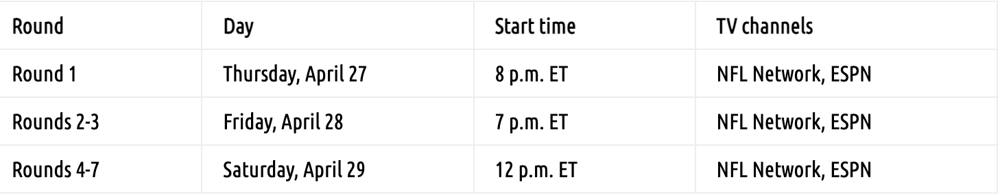
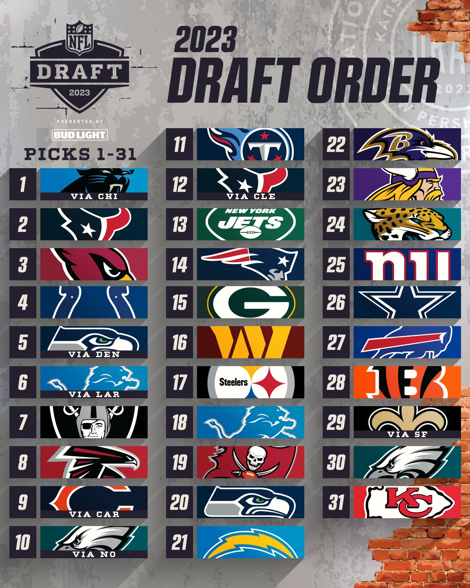
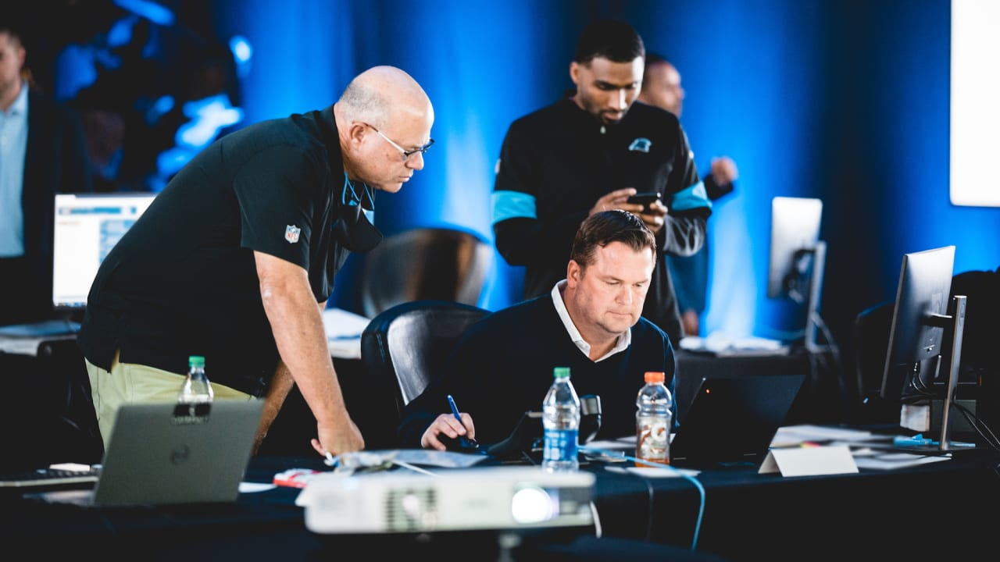
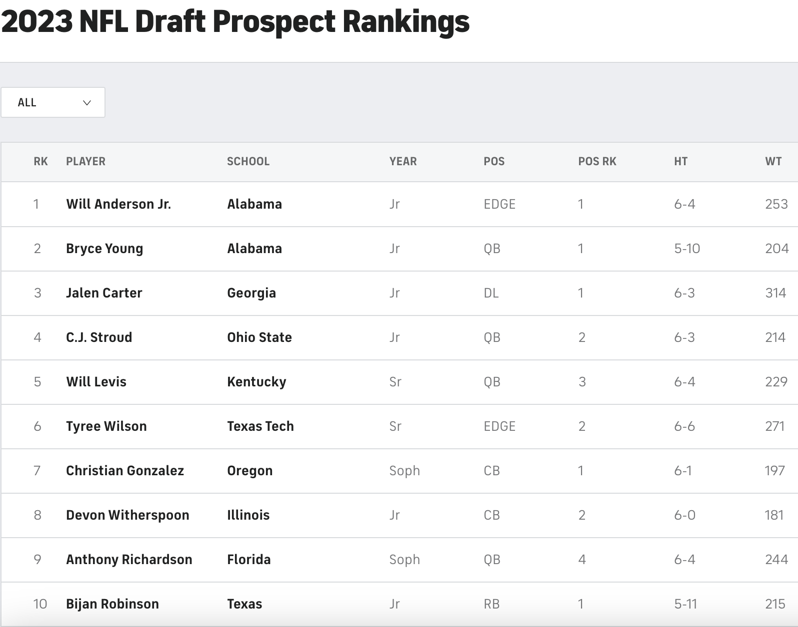
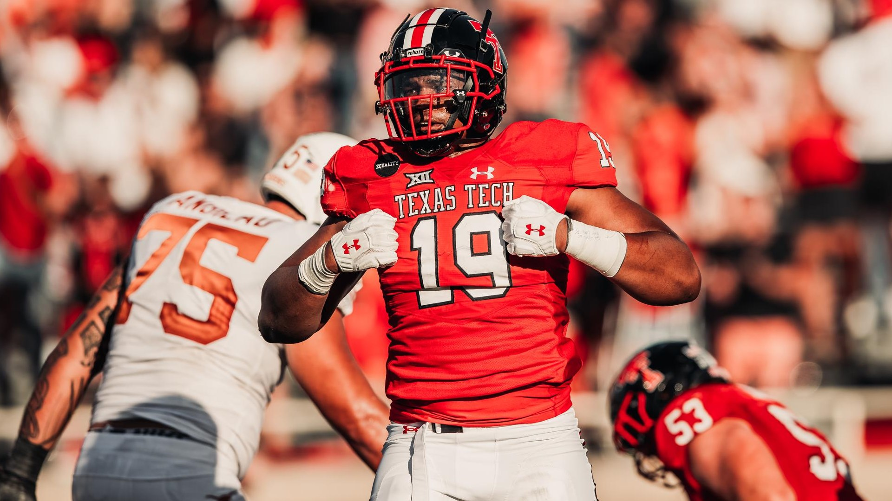
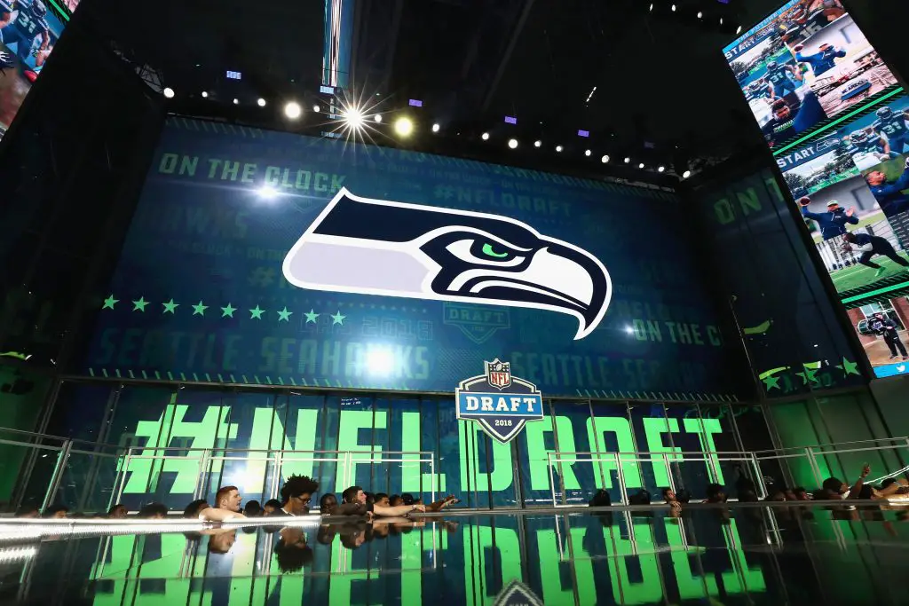
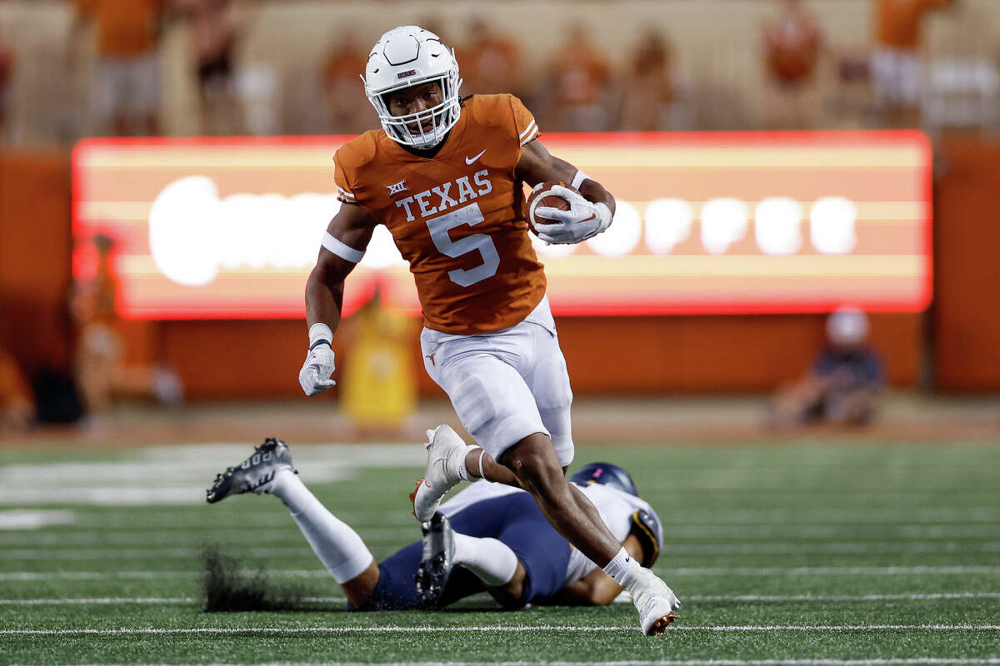
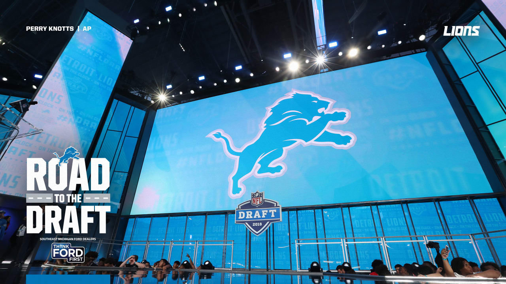
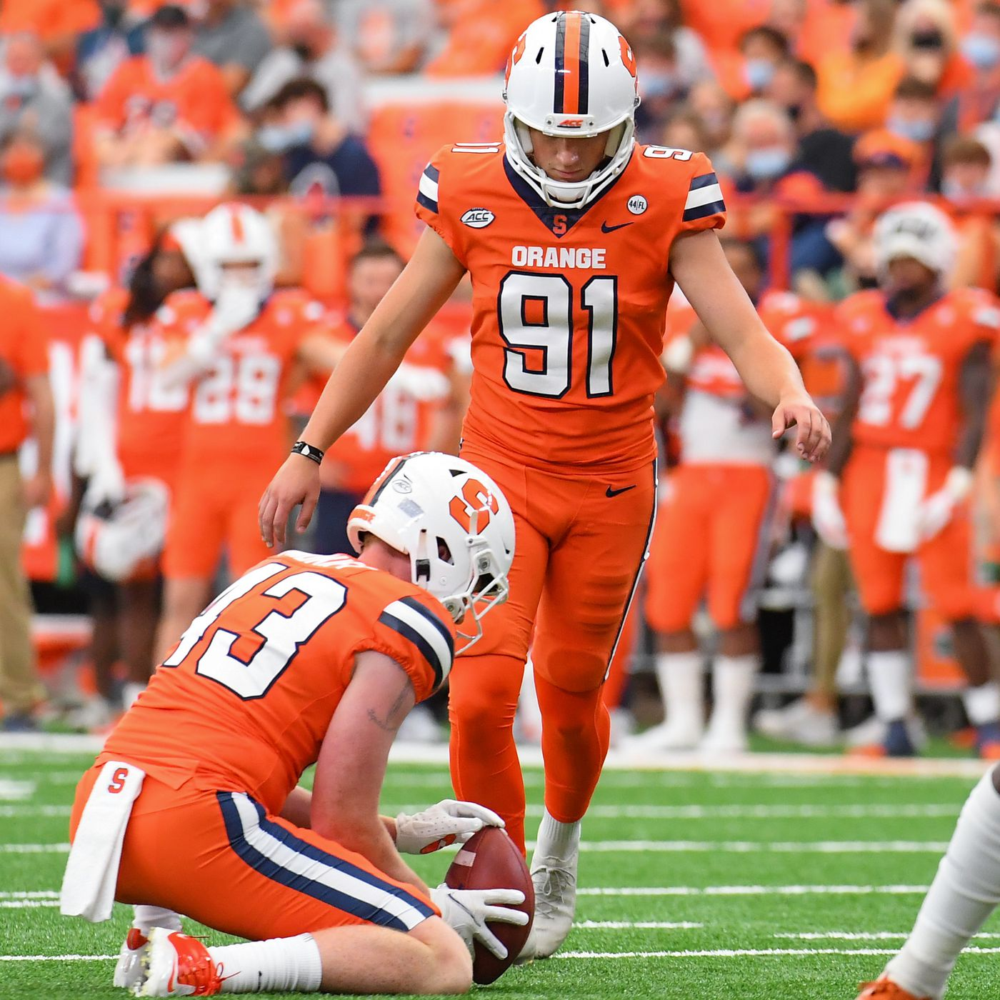

10 Hot Takes for the 2023 NFL Draft
Wilson ahead of Anderson, Robinson in the top-10 and more.
NFL Draft night. Credit: USATSI
Jeff Risdon
March 27, 2023 5:58 pm ET
We are exactly one month away from the start of the 2023 NFL draft in Kansas City. What exactly is going to happen on April 27th-29th in the draft?
Those are mysteries, of course. We’ll find out in due time, but that won’t stop the speculation.
In that spirit, here are 10 quick, bold predictions on what will happen next month in the draft.
NFL Draft Schedule
Credit: Faceoff Sports Newtwork
The No. 3 pick will be traded
The Arizona Cardinals are currently slated to make the No. 3 pick. They will not, however, make the pick at No. 3.
Arizona will trade the pick to a team looking to snag the best remaining quarterback on the board. The Cardinals will get a first-round pick this year, along with a Day 2 pick and a player who can start right away in return.
5 QBs in the first round, and then a massive gap
There will be five quarterbacks taken in the first round.
- C.J. Stroud
- Bryce Young
- Anthony Richardson
- Will Levis
- Hendon Hooker
After Hooker comes off the board, somewhere between 18 and 26 overall, there won’t be another QB selected until the compensatory pick range of the third round.
Breaking down the Top 5 quarterbacks. Credit: NFL on ESPN
Tyree Wilson goes ahead of Will Anderson
Much like a year ago when Travon Walker was selected No. 1 overall over more accomplished talents like Aidan Hutchinson and Kayvon Thibodeaux, Texas Tech EDGE Tyree Wilson will be drafted before Alabama’s Will Anderson. Wilson’s superior size and athletic traits will coax a higher pick than Anderson’s superior on-field production in college.
Seattle won't make a pick in the 2nd round
Right now, the Seattle Seahawks have four picks in the first 52 selections. Thanks to trades, the Seahawks are slated to pick at 5, 20, 37 and 52.
The Seahawks will package 37 and 52 and jump into the back end of the first round to select Georgia TE Darnell Washington.
Only 1 first-round wide receiver
The general consensus amongst draft analysts is that it’s not a high-end wide receiver class. That opinion will be validated when just one wideout comes off the board on the draft’s first night. Ohio State’s Jaxon Smith-Njigba will be the only first-round wide receiver.
Bijan Robinson will go in the top 10
Bijan Robinson is a very difficult player to forecast in terms of draft slotting. The Texas running back is almost universally regarded as one of the five highest-rated players in the draft, but selecting a running back with such a lofty draft position has become as out of fashion as white parachute pants.
Someone will bring back the running back into the top 10. Robinson is that good.
“He’s a better human being than he is a football player, and that’s saying a lot because he’s a heck of a football player, but he’s a tremendous leader, a tremendous teammate, he’s unbelievable for our community.”
-Texas head coach Steve Sarkisian
The 49ers bail on comp picks
San Francisco earned three compensatory draft picks, No. 99, 101 and 102.
Much to the relief of everyone who covers the 49ers, GM John Lynch will package all three of those picks in various trades and not make a single selection at the end of the third round.
Two former first-round picks will be traded on draft weekend
Two recent first-round picks will find new homes during the draft weekend.
The Lions will move on from 2020 No. 3 overall pick Jeff Okudah. The oft-injured cornerback will be part of a larger deal.
The same is true of Jaguars’ first-rounder from 2020, EDGE K’Lavon Chaisson. He was the No. 20 pick in that draft.
Neither player has been bad, but their time to prove themselves with their original team comes to an end.
4 kickers will hear their names called
Drafting a kicker is not something most fanbases clamor for, and NFL teams are pretty strong in not poking that bear. Only one kicker has been selected in each of the last two drafts. There haven’t been more than three kickers selected in any year since 2012.
That changes in 2023. Four kickers will be drafted, all in the final two rounds:
- Andre Szmyt, Syracuse
- Jake Moody, Michigan
- B.T. Potter, Clemson
- Anders Carlson, Auburn
Two big names who fall in the draft
Two players who have been mainstays in the first round of mock drafts for months will not be selected in the top 31 (remember–Miami forfeited its first-rounder).
Clemson DT Bryan Bresee and Notre Dame TE Michael Mayer will each fall out of the first round. For Bresee, the wait could be a much longer one than anticipated.
The NFL Draft will be held in Kansas City. Credit: Faceoff Sports Newtwork
The 2023 NFL Draft order. Credit: NFL
The Carolina Panthers draft room. Credit: Brandon Todd
The Top Ten NFL Draft prospects. Credit: CBS

Top-10 prospect Will Anderson. Credit: Butch Dill
Top-10 prospect Tyree Wilson. Credit: Texas Tech
The Seattle Seahawks own two first-round picks in the 2023 NFL Draft. Credit: Ronald Martinez
Bijan Robinson, one of the most exciting prospects in the 2023 NFL Draft. Credit: InsideTheStar.com
The Detroit Lions own two first-round picks in the 2023 NFL Draft. Credit: Perry Knotts | AP
Andre Szmyt is one of the top-kicking prospects. Credit Rich Barnes